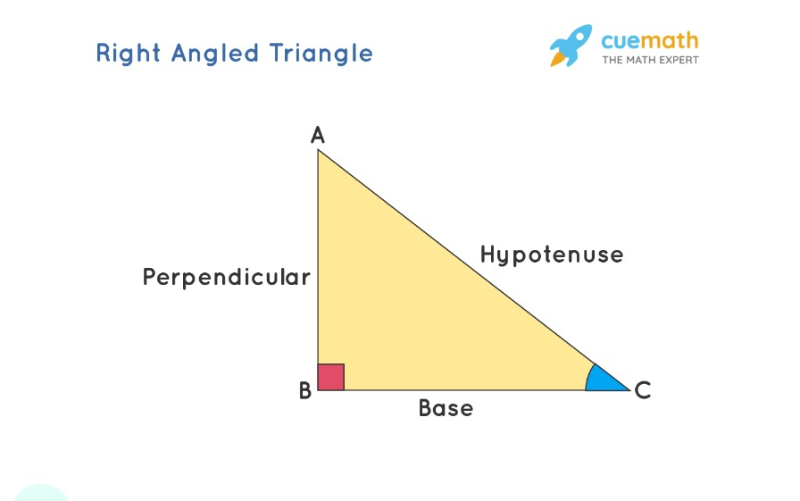

What are Trigonometric Functions?
Trigonometry employs six fundamental functions, which are essentially ratios derived from the sides of a right-angled triangle. These include the sine, cosine, tangent, secant, cosecant, and cotangent functions. Each trigonometric identity is determined by the ratio of two specific sides: the adjacent side, the opposite side, and the hypotenuse—the triangle's longest side. Using trigonometric formulas, one can calculate the values of these functions, which are essential in solving various geometric problems.
Trigonometric Functions
The basic formulas for calculating the trigonometric functions are:
Sine (sin)
sin θ = Opposite / Hypotenuse
Cosine (cos)
cos θ = Adjacent / Hypotenuse
Tangent (tan)
tan θ = Opposite / Adjacent
Secant (sec)
sec θ = Hypotenuse / Adjacent
Cosecant (csc)
csc θ = Hypotenuse / Opposite
Cotangent (cot)
cot θ = Adjacent / Opposite
Trigonometry Visual Calculator
Learning Resources
Access a curated list of multimedia resources to bolster your understanding of trigonometric concepts. Watch educational videos, listen to explanatory audio clips, and interact with dynamic simulations.
More media resources will be added regularly to aid your learning journey.